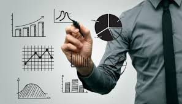
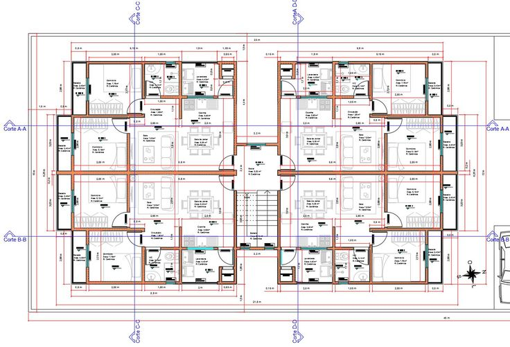
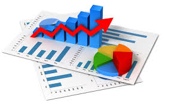
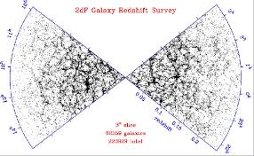
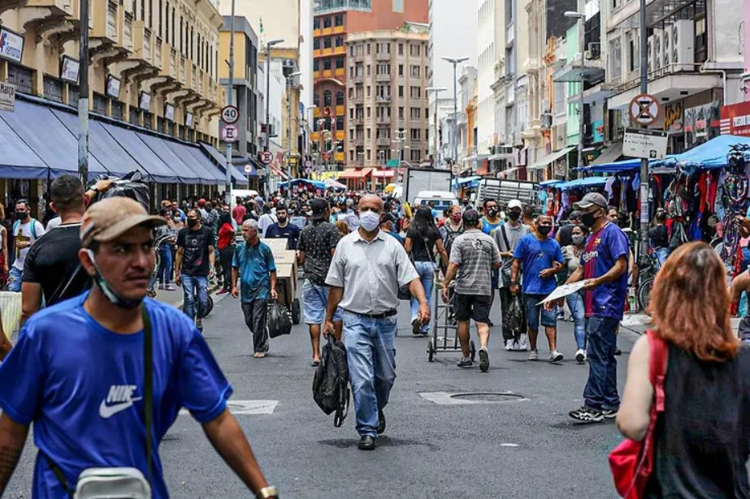

A estatística é um campo da matemática focado na coleta, organização, análise e interpretação de dados, fornecendo métodos essenciais para a compreensão e tomada de decisões baseadas em informações. No cotidiano, os dados estão presentes em todas as esferas, como na educação, saúde, economia e nas ciências sociais. A estatística é aplicada para observar fenômenos e gerar informações úteis, seja por meio de estudos observacionais ou experimentais.

A matemática estatística tem como propósito principal a coleta, organização, análise e interpretação de dados. Ela busca transformar dados brutos em informações úteis, permitindo a compreensão de fenômenos complexos e a tomada de decisões informadas. A estatística é essencial para sintetizar grandes volumes de dados e identificar padrões, tendências e relações entre variáveis. Isso é feito através de métodos como a estatística descritiva, que resume os dados, e a estatística inferencial, que permite fazer previsões e inferências sobre uma população com base em uma amostra.
A importância da matemática estatística é vasta e se estende a diversas áreas do conhecimento e da vida cotidiana. Na saúde, por exemplo, ela é crucial para a análise de dados epidemiológicos e a avaliação da eficácia de tratamentos médicos. Na economia, a estatística ajuda a entender o comportamento dos mercados e a prever tendências econômicas. Além disso, ela é fundamental na pesquisa científica, na engenharia, na psicologia e em muitas outras disciplinas, fornecendo as ferramentas necessárias para a análise rigorosa e a interpretação de dados complexos.
Na economia, a estatística é crucial para a análise de dados econômicos, permitindo a mensuração de indicadores como inflação, desemprego e crescimento do PIB. Economistas utilizam métodos estatísticos para prever tendências de mercado, avaliar políticas econômicas e modelar o comportamento de agentes econômicos, como consumidores e empresas. Essas análises quantitativas fornecem subsídios para a tomada de decisões em questões macroeconômicas e microeconômicas.
Nas ciências sociais, a estatística facilita o estudo de padrões de comportamento e fenômenos sociais. Pesquisas quantitativas, como censos e levantamentos de opinião, utilizam ferramentas estatísticas para analisar dados sobre populações, estratificação social, comportamentos e atitudes. Esses dados são essenciais para o desenvolvimento de teorias sociológicas, avaliação de políticas públicas e entendimento das dinâmicas sociais em diferentes contextos históricos e culturais.

A engenharia depende da estatística para a otimização de processos e controle de qualidade. Métodos estatísticos são aplicados no desenvolvimento de produtos, análise de falhas, confiabilidade de sistemas e gerenciamento de riscos. Na engenharia de produção, por exemplo, a estatística é usada para melhorar a eficiência das operações e minimizar desperdícios, enquanto na engenharia civil, ajuda a avaliar a segurança e a durabilidade de materiais e estruturas.
Na área da saúde, a estatística é indispensável para a análise de dados clínicos e epidemiológicos. É usada para avaliar a eficácia de tratamentos, interpretar ensaios clínicos, modelar a propagação de doenças e auxiliar em decisões de políticas de saúde pública. A bioestatística, em particular, fornece as ferramentas necessárias para analisar grandes volumes de dados provenientes de estudos médicos e laboratoriais, garantindo conclusões científicas robustas.

Na administração, a estatística é amplamente utilizada para a análise de desempenho organizacional, planejamento estratégico e gestão de recursos. Ferramentas como análise de regressão e séries temporais são aplicadas para prever vendas, identificar tendências de mercado e otimizar a alocação de recursos. A estatística permite que gestores tomem decisões informadas com base em dados concretos, reduzindo incertezas e melhorando a eficiência operacional.

Na astronomia, a estatística desempenha um papel fundamental na interpretação de dados observacionais e experimentais. Devido à imensidão e complexidade do universo, grande parte da análise astronômica depende de métodos estatísticos para estimar distâncias, analisar a distribuição de estrelas e galáxias, e prever fenômenos como eclipses e explosões estelares. A estatística também é usada em estudos cosmológicos, ajudando a entender a estrutura do universo e suas origens.
Enquanto entre 2020 e 2021, anos muito marcados pela pandemia de Covid-19, o número de viagens realizadas por moradores de domicílios particulares permanentes no Brasil caiu de 13,6 para 12,3 milhões, em 2023, esse total saltou para 21,1 milhões, um aumento de 71,5%, incluindo as viagens nacionais e internacionais.
A Universidade de São Paulo (USP) anunciou a abertura de dois novos concursos públicos para o preenchimento de duas vagas no cargo de Professor Doutor, no Instituto de Ciências Matemáticas e de Computação, junto ao Departamento de Matemática Aplicada e Estatística.

O Brasil tem 203.062.512 habitantes, segundo o IBGE. Defasagem em relação ao que era estimado abre discussão